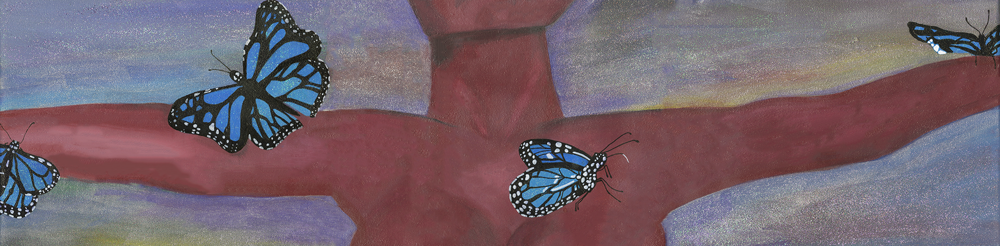
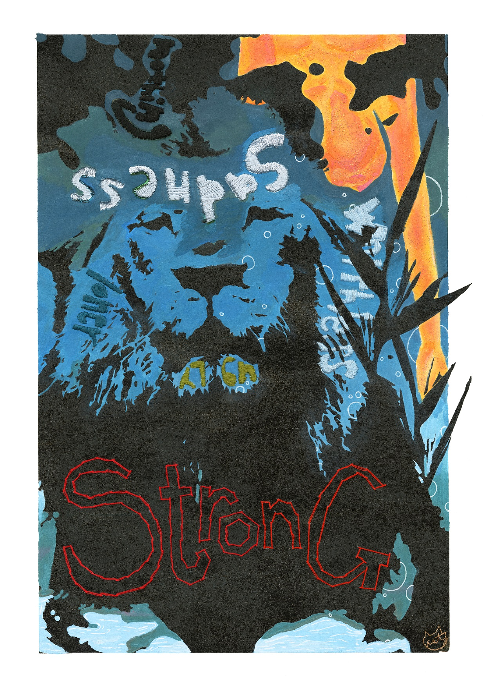
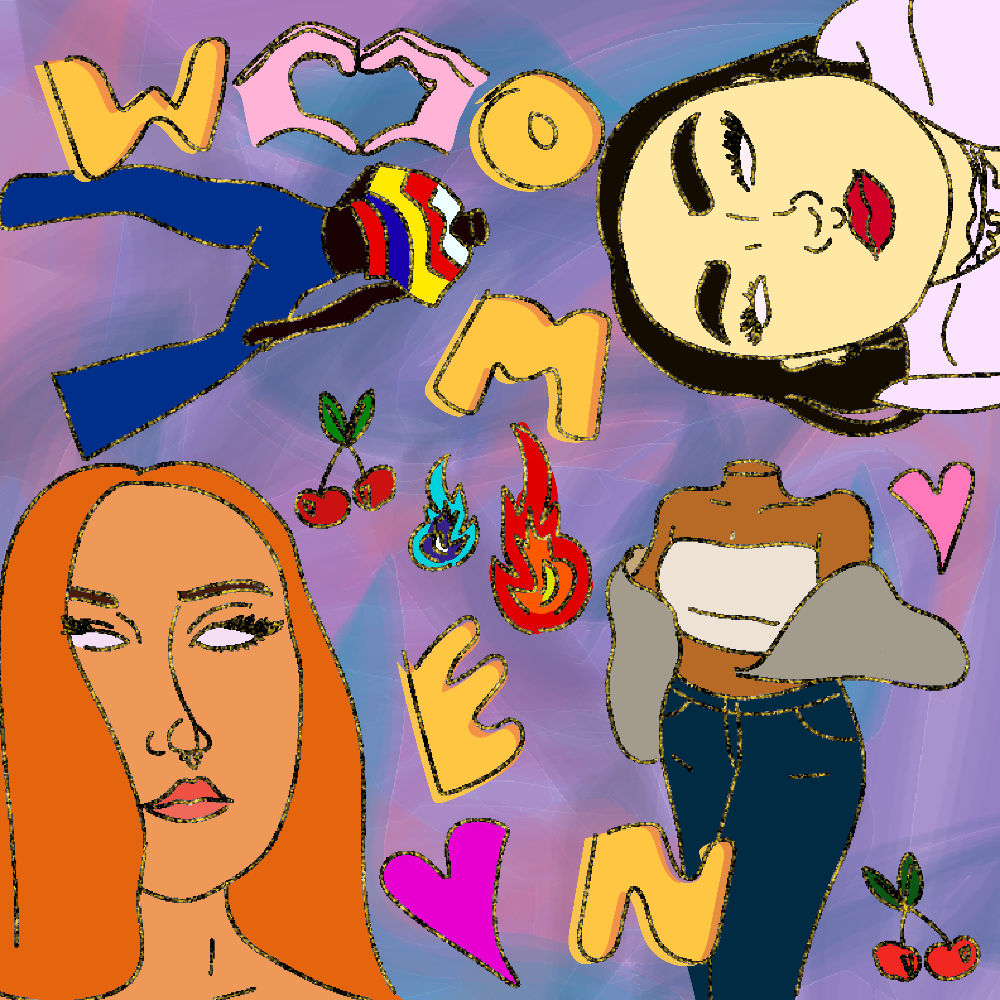
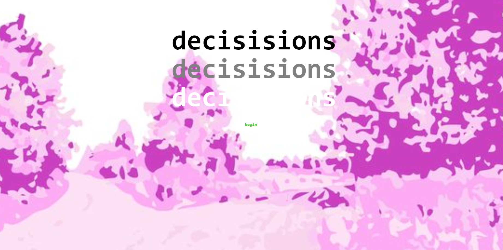

Embrace
Embrace presents a woman who had surrendered. She is looking skyward, folling backwards, and has her arms open-
in an embrace, in surrender, and in acceptance to whatever life throws at her. The fall is into a void of colors and mystery that
has no end or begining. By surrendering to ones vulnerable and raw emotions and by reaching a patch of darkness,
you are abe to find comfort and a way out. When you embrace your emotions and thoughts, you are able to find a new path
and perspective, which allows you to leave anew and victorius.
2019. Acrylic painting.

Beyond The Depths
The hardships that we face throughout life have a purpose. The word ‘Strength’ and the lion invoke the stability and
durability an individual builds for themselves that leads to happiness and joyous experiences in life. When you rotate the image,
you see the journey undergone to obtain said happiness. Through this lens, an individual reaches out, looking skyward from the depths
of the ocean, surrounded by darkness and cruel words that haunt the depths of her mind. But the closer that one gets to the surface,
the more light there is. Given time, we are able to leave the lonely and dark depths. The ugly parts in life are unavoidable. By exiting
them, we are able to strengthen ourselves and become happier. The orange figure symbolizes happiness, which one obtains through having
strength (red) and hope (yellow). Live without fear and unapologetically swim towards the surface.
2020. Mixed Media (Screen printing, acrylic paint, and embroidery).

Women
This piece is meant to represent a small portion of women. It shows that women come in different
shapes, sizes, and colors. This piece by no means encapsulates all women that exist, it shows
just a few examples of what a woman can be. Through this piece, I want to show the power, beauty,
and excellence of women and to let women know that they are amazing and loved. I hope to one day revamp
this piece to represent more women on a grander scale.
2020. Adobe Illustrator.

Disney Dream
With the pandemic at hand, many places that would usually be frequented by many people are out of reach-
like Disneyand. The glitching in this photo means to represent all the plans, ideas, and adventures
that have been corrupted and ruined because of the virus, making them impossible and out of reach for
an unknown amount of time.
2020. Audacity & Adobe Photoshop.

Decision
As someone who has always been interested in criminology, thrillers,
and murder mysteries, this was a huge inspiration and driving force behind this piece. This game
revolves around you, the player, who has to decide what actions to take after witnessing a woman’s
motorcycle being stolen. One thing leads to another, which leads you to make an ultimate decision-
one of life and death. I wanted to give the user a fun and interactive game that would keep them on
their toes and engaged throughout. Along with the thrilling plot, I decided to visually enforce the
game with background images that correlate to the location of each passage (which I got off of Google
Images and edited in Adobe Illustrator). While the subject matter of the game is a bit heavy and dark,
the aesthetic and visuals are bright and light, creating an intended contrast and irony.
Feel free
to click the link above to run through and check out the game.
2020. Twine Game.

Thee Backyard Fairyscape
Being stuck at home for 8 monthes, there weren't many places I could escape to or new places for
me to see or explore. One thing that has captivated me during this time at home has been the sky. It changes every
hour of the day, is infinite, and can convey different moods. This piece captures how the sky, and nature in general,
can have a serenic effect on us a mortal and finite beings. The gradients, color scheme, and
soft brush strokes add to the magical and fictional aura the piece exudes as a way to put the viewer into
a calming, far away, and dream enduced haze.
2020. Adobe Illustrator and Photoshop.
© Catherine Thy Le. All Rights Reserved.